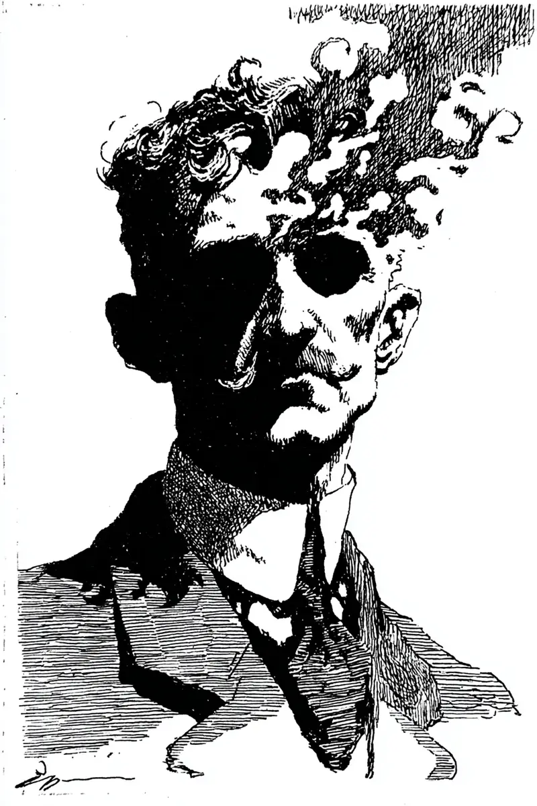

점심을 먹다 말고, 민서가 젓가락을 내려놓고 그의 얼굴을 보았다.
[Mid meal, Minseo set down her chopsticks and looked at his face.]
그러고는 아무 말 없이, 자기 뺨을 손끝으로 가만히 가리켰다.
[Then, saying nothing, she quietly pointed to her own cheek with a fingertip.]
그는 자기 뺨을 문질렀고, 마른 것이 한 겹 손등에 묻어 나왔다.
[He rubbed his cheek, and a dry layer came off onto the back of his hand.]
살갗이었다. 통증은 없었다.
[It was skin. There was no pain.]
그게 처음으로 그를 불안하게 했다, 아프지 않다는 것이.
[That was the first thing that unsettled him, that it did not hurt.]
오후 내내, 사람들은 그를 한 번 보고 다시 보지 않았다.
[All afternoon, people looked at him once and did not look again.]
복도에서 마주친 아이가 손가락을 들어 그를 가리켰다.
[A child he passed in the hallway raised a finger and pointed at him.]
아이의 엄마는 그 손을 황급히 끌어내렸지만, 아이는 무서워하지 않았다.
[The child’s mother hurriedly pulled the hand down, but the child was not afraid.]
아이는 웃고 있었다. 오래 보지 못한 사람을 다시 만난 얼굴로.
[The child was smiling. With the face of someone meeting again a person long unseen.]
그의 책상 위에는, 누가 두었는지 모를 흰 국화 한 송이가 놓여 있었다.
[On his desk lay a single white chrysanthemum, left by he knew not whom.]
그는 그것을 서랍에 넣었다. 손이 떨렸다.
[He put it in a drawer. His hand shook.]
오후 늦게, 한 선배가 그의 자리로 와 무언가 말하려 입을 열었다.
[Late in the afternoon, a senior colleague came to his desk and opened his mouth to say something.]
그러나 아무 말도 나오지 않았고, 그는 그저 그의 어깨에 잠시 손을 얹었다 떼었다.
[But no words came, and the man merely laid a hand on his shoulder for a moment, then took it away.]
위로하듯이. 혹은 작별하듯이.
[As if in consolation. Or as if in farewell.]
화장실에 가는 대신, 그는 휴대폰 카메라를 켰다. 단 한 번.
[Instead of going to the bathroom, he turned on his phone camera. Just once.]
화면 속에서, 이마부터 광대뼈까지 살갗이 젖은 종이처럼 들떠 있었다.
[On the screen, from forehead to cheekbone, the skin had lifted like wet paper.]
그 아래 드러난 것은 붉은 살이 아니라, 마른 회색이었다.
[What showed beneath was not red flesh but a dry grey.]
오래된 분필처럼, 강바닥에서 건져 올린 뼈처럼.
[Like old chalk, like bone dredged from a riverbed.]
그리고 그 회색은, 입이 없는데도, 분명히 웃고 있었다.
[And that grey, though it had no mouth, was unmistakably smiling.]
그는 휴대폰을 떨어뜨렸고, 화면이 바닥에서 깨졌다.
[He dropped the phone, and the screen cracked on the floor.]
엘리베이터가 1층에 닿기도 전에, 사람들은 모두 다른 층에서 내렸다.
[Before the elevator even reached the ground floor, everyone had gotten off on other floors.]
마지막으로 내린 사람이, 문이 닫히기 직전 그에게 고개를 까딱했다.
[The last person to step out gave him a small nod just before the doors closed.]
다시는 못 볼 사람에게 하듯이.
[As one does to someone they will never see again.]
퇴근길 지하철에서, 맞은편에 앉은 노인이 천천히 고개를 숙였다.
[On the subway home, an old man sitting opposite slowly bowed his head.]
그것은 혐오가 아니었다. 그것은 예의였다.
[It was not disgust. It was courtesy.]
아주 오래 기다린 사람에게만 갖추는 예의.
[The courtesy paid only to someone awaited a very long time.]
다음 역에서, 사람들이 내리면서 그를 위해 길을 비켜 주었다.
[At the next stop, the people getting off cleared a path for him.]
아무도 그를 밀지 않았다. 아무도 그에게 닿으려 하지 않았다.
[No one pushed him. No one would let themselves touch him.]
모르는 번호로 문자가 왔다. 이름도, 인사도 없었다.
[A text came from an unknown number. No name, no greeting.]
이제 거의 다 됐네요.
[It is almost done now.]
그는 답하지 않았다. 답할 말을 알고 있었지만, 모르는 척했다.
[He did not reply. He knew the words to answer with, but pretended he did not.]
집에 돌아와, 그는 어머니에게 전화를 걸었다.
[Back home, he called his mother.]
신호가 한참 가다가, 낯선 목소리의 여자가 받았다.
[The line rang a long while, then a woman with an unfamiliar voice answered.]
누구를 찾으세요, 하고 그녀가 물었다.
[Whom are you looking for, she asked.]
그가 어머니라고 답하자, 잠시 침묵이 흘렀다.
[When he said his mother, a silence fell.]
여기 그런 사람 없습니다. 죄송하지만, 잘못 거셨어요.
[There is no such person here. I am sorry, but you have the wrong number.]
그는 그 번호를 십 년 동안 외우고 있었다.
[He had known that number by heart for ten years.]
아니, 십 년이라고 믿고 있었다.
[No. He had believed it was ten years.]
그는 자기 이름을 소리 내어 불러 보았다.
[He spoke his own name aloud.]
도현. 한 번. 두 번.
[Dohyun. Once. Twice.]
부를수록 그 이름은 입 안에서 얇아졌다, 꼭 살갗처럼.
[The more he said it, the thinner the name grew in his mouth, just like skin.]
회사. 7층. 매일 같은 자리. 매일 같은 길.
[The company. The seventh floor. The same seat every day. The same road every day.]
그 모든 기억이, 누군가 그의 위에 잠시 덮어 둔 천처럼 느껴졌다.
[All those memories felt like a cloth someone had laid over him for a while.]
밤이 깊어지자, 익숙한 냄새가 방을 채웠다.
[As the night deepened, a familiar smell filled the room.]
흙냄새였다. 오래 덮여 있던 무덤을 처음 여는 냄새.
[It was the smell of earth. The smell of a grave long kept covered, opened for the first time.]
문제는 그 냄새가 무섭지 않다는 것이었다. 익숙했다.
[The trouble was that the smell did not frighten him. It was familiar.]
그는 그 냄새를 전에도 맡은 적이 있었다. 여러 번.
[He had smelled it before. Many times.]
여러 얼굴로, 여러 이름으로, 여러 도시에서.
[With many faces, with many names, in many cities.]
그는 손을 들어, 남아 있는 뺨을 천천히 쓸어내렸다.
[He raised his hand and slowly drew it down his remaining cheek.]
살갗은 장갑이 벗겨지듯, 아무 저항 없이 손을 따라 흘러내렸다.
[The skin slid down after his hand without the slightest resistance, the way a glove is drawn off.]
도현이라는 이름이, 그 살갗과 함께 바닥에 떨어졌다.
[The name Dohyun fell to the floor along with that skin.]
마른 회색의 얼굴이, 마침내 처음으로 깊게 숨을 들이마셨다.
[The dry grey face at last drew its first deep breath.]
그것은 무섭지 않았다. 슬프지도 않았다.
[It was not afraid. It was not sad either.]
다만 조금 지쳐 있었다, 이 모든 일을 너무 여러 번 해 왔기에.
[It was only a little tired, having done all of this far too many times.]
가장 힘든 것은 언제나 똑같았다.
[The hardest part was always the same.]
새 얼굴을 쓰는 일이 아니라, 그 얼굴이 진짜라고 믿는 척하는 일.
[Not the putting on of a new face, but the pretending to believe that face was real.]
그리고 마지막 순간까지, 다음 사람이 누구일지 이미 알면서도 모르는 척하는 일.
[And, until the very last moment, the pretending not to know who the next one would be, though it already knew.]